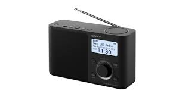

En la vida cotidiana sin darnos cuenta utilizamos dispositivos los cuales funcionan gtracias a un transistor, como:



 Inicio
Inicio ¿Qué es?
¿Qué es? Tipos de transistor
Tipos de transistor Usos del transistor
Usos del transistor